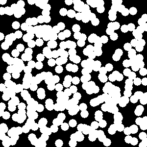
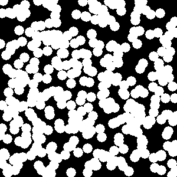

Example
The following example takes an original image (a slice of FIXME: ceramic)
and an initial approximation and reconstructs the original. Dimensions of the
original image are 300x300 pixels. The code below was used to run a
reconstruction. The value of steps argument was 3000000.
(defpackage annealing-test
(:use #:cl #:recon)
(:export #:test-annealing))
(in-package :annealing-test)
(defun read-image (name dimensions)
"Read a binary file into an array of octets."
(let* ((array (make-array dimensions :element-type 'bit))
(displaced (make-array (reduce #'* dimensions)
:element-type 'bit
:displaced-to array
:displaced-index-offset 0)))
(with-open-file (input name :element-type '(signed-byte 8))
(read-sequence displaced input))
array))
(defun make-modifier ()
"Create a modifier which will sample the pixel at the boundary
between phases (zeros and ones) and change the value of the pixel to
the opposite."
(make-instance 'batch-modifier
:modifier (make-instance 'flipper
:sampler (make-instance 'interface-sampler))))
(defun test-annealing (original initial steps &key dimensions (t0 1d-5))
"Run simulation of annealing for STEPS steps. INITIAL is the name of a
file with initial approximation of ORIGINAL. ORIGINAL and INITIAL are
file names of images with dimensions stored in the list DIMENSIONS in raw
format. T0 is initial temperature of the system."
;; Load images
(let ((original-array (read-image original dimensions))
(initial-array (read-image initial dimensions)))
;; Create GPU context
(with-gpu-context (ctx)
;; Upload images to GPU
(with-images ((image1 ctx initial-array)
(image2 ctx original-array))
;; Create proximeter — an object which measures a distance
;; between two images according to two-point correlation
;; function.
(with-proximeter (proximeter image1 image2)
(let ((cost (s2-cost proximeter)) ; Wrap proximeter in a cost function
(cooldown (aarts-korst-cooldown :n 10000 :alpha 0.01d0)) ; Create cooldown schedule
(modifier (make-modifier))) ; Create a modifier
;; RUN-ANNEALING is a helper function which calls ANNEALING-STEP STEPS times.
(run-annealing image1 image2 t0 steps
:cost cost
:cooldown cooldown
:modifier modifier)))
;; Return the resulting bit array
(image-array image1)))))
The original image:  The initial approximation: 
The reconstruction:
The initial approximation: 
The reconstruction: